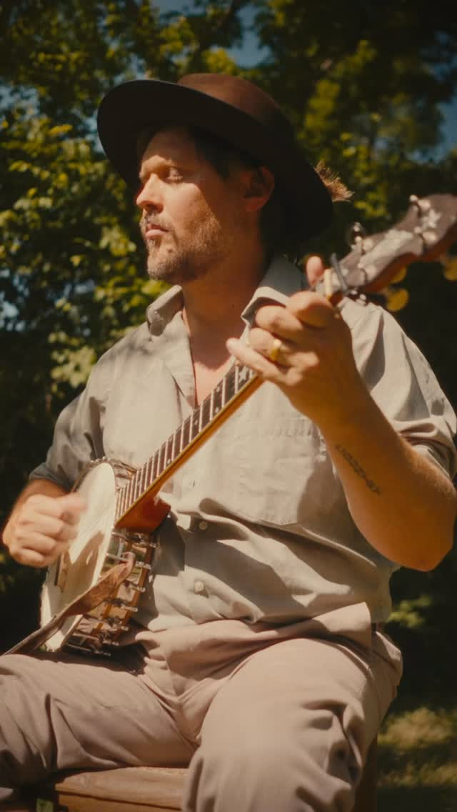
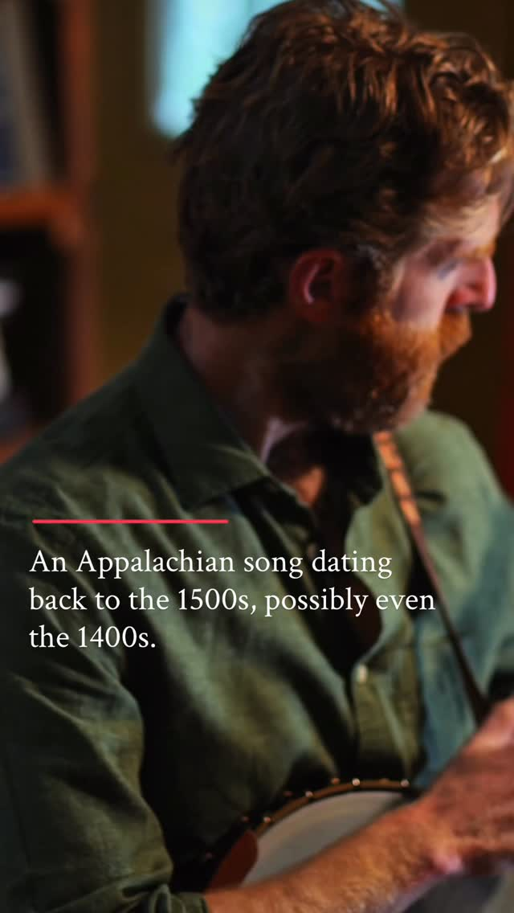
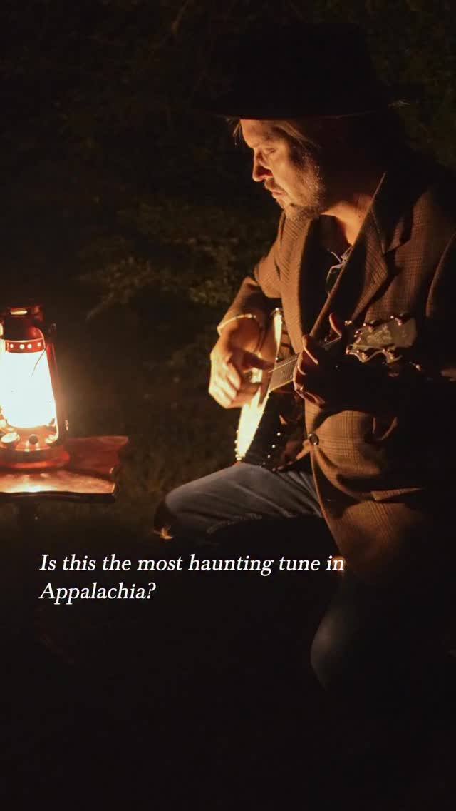
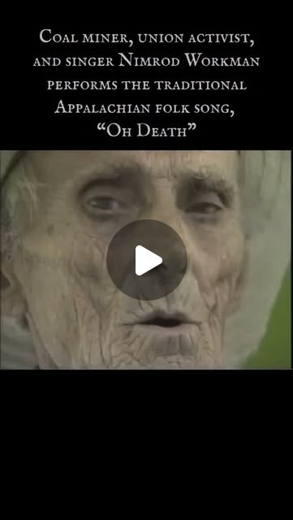
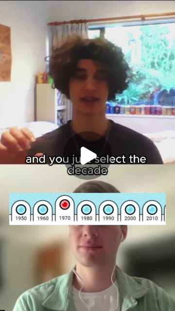
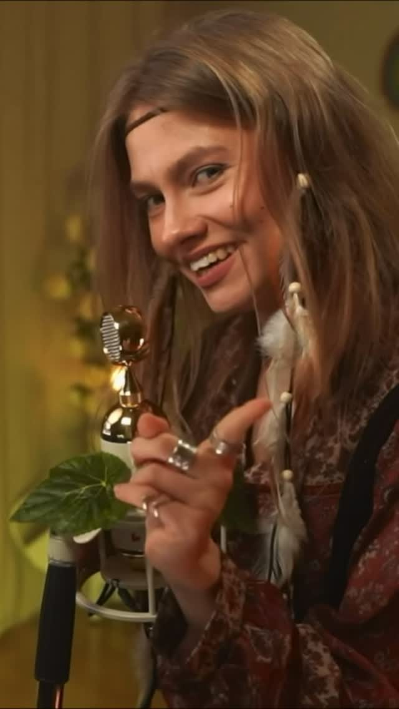
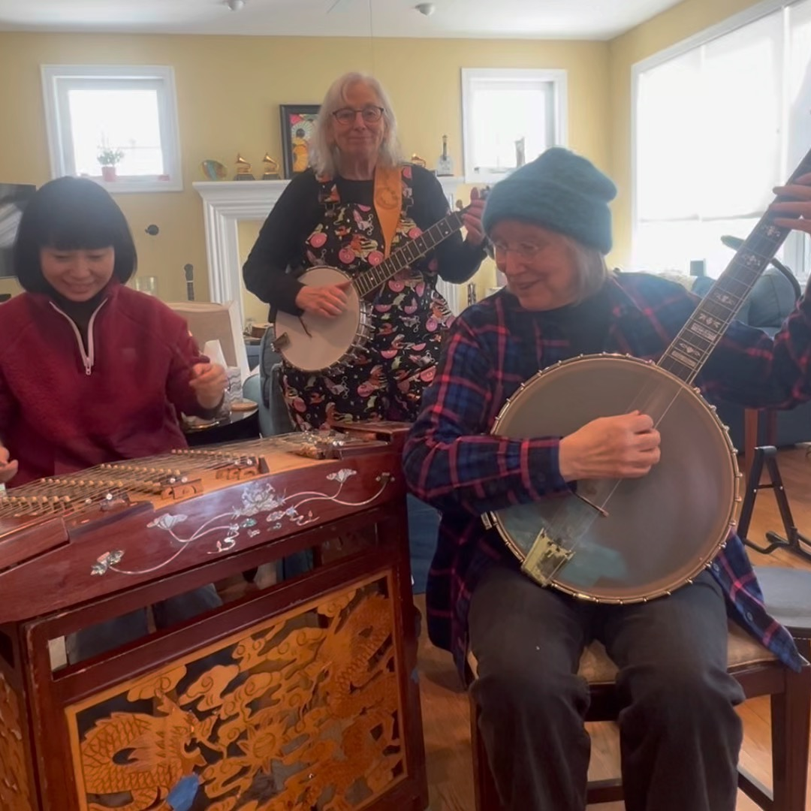

Melody Genealogy — Crate-Digging the Public Domain with Local Search
Try It — Action Sketch
Pull 200–500 public-domain recordings (Library of Congress and Internet Archive 78s), transcribe pitch contours with a melody extractor, and embed both contours and audio with an open audio model into ChromaDB, following SentrySearch's local layout, Test on known families: do Shady Grove / Matty Groves and the Hog-Eye Man tunes land near each other? Have Claude write a lineage-graph view (NetworkX plus a force graph) with timestamped links back to sources, Package one cluster as a public-domain sample pack with a provenance sheet and a short video tracing its family; release free and measure producer pickup, Falsifier: if known variant families don't cluster above chance in embedding space, the search is noise and the hand method stays the only method
Connected Posts (12)







